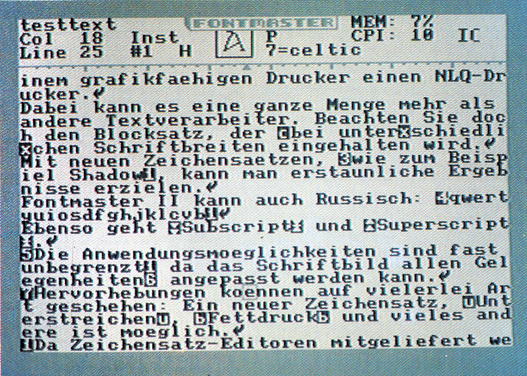
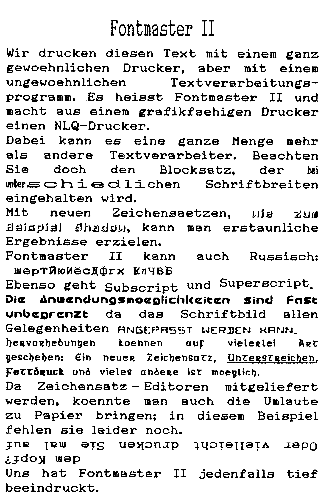

Fontmaster II: NLQ im Nu
Sie brauchen sich keinen neuen Drucker kaufen, um ihre Briefe in NLQ zu drucken. Ihr alter Drucker tut es auch - wenn Sie die richtige Textverarbeitung haben.
Bevor Sie vorschnell sagen »Nicht schon wieder eine Textverarbeitung!«, ein Wort vorweg: Fontmaster II ist anders, als alle anderen Textverarbeitungsprogramme. Denn mit Fontmaster II können Sie ihre Korrespondenz in bester Schönschrift erledigen. Das Zauberwort heißt NLQ — Near Letter Quality. Hinter diesen drei Buchstaben verbirgt sich eine Einrichtung bei Druckern, die das Schriftbild erheblich verbessert und fast an einen Typenraddrucker angleicht. Drucker, die von Haus aus NLQ drucken können, sind leider etwas teurer als normale. Außerdem will der, der schon einen Drucker hat, oft nicht mehr wechseln. Mit Fontmaster II braucht man aber keinen NLQ-Drucker, um NLQ zu drucken, denn das erledigt das Programm.
Das ist aber nicht die einzige Eigenschaft des Fontmaster II, mit der er sich besonders auszeichnet. Denn um NLQ zu drucken, mußte der Hersteller einen NLQ-Zeichensatz programmierern. Und warum soll man sich dann auf einen Zeichensatz beschränken? Ganze 32 Zeichensätze werden auf der Diskette mitgeliefert, zusätzlich noch ein Zeichensatzeditor, mit dem man seine eigenen Druckwünsche verwirklichen kann.
Bevor wir uns den Fontmaster II etwas genauer ansehen, kurz etwas zur Entstehungsgeschichte: Anfang 1985 wurde von Marty Flickinger das Programm Fontmaster programmiert, das sich in Amerika recht gut verkaufte. Diese Version hatte einige Nachteile, sie war zum Beispiel recht langsam. Die neue Version wurde vom Autor komplett neu geschrieben. Neben notwendigen Verbesserungen flossen noch viele Anregungen von Käufern ein und Fontmaster II war geboren.
Befehlsvielfalt
Wirklich enorm ist die Menge an Befehlen, die Fontmaster II beherrscht. Im Handbuch benötigt die Zusammenfassung aller Tastaturfunktionen und Formatier-Befehle fast fünf Seiten. Doch bei alldem soll man nicht verzweifeln. Das wirklich ausführliche Handbuch beschreibt alle Befehle sehr klar und in logischer Reihenfolge: Die einfachen und wichtigen am Anfang, die komplizierteren und seltener benutzten am Schluß. Einziger Nachteil: Alles ist zur Zeit mal wieder nur in Englisch erhältlich. Vielleicht ändert sich das, wenn sich ein deutscher Vertrieb für Fontmaster II findet (Händler aufgepaßt!).
Die Tastatur ist mit Kommandos satt belegt. Tastenkombinationen mit Control, Commodore, Shift-Control und Shift-Commodore erfüllen alle möglichen Funktionen. Es gibt kaum etwas, was hier fehlen würde. Um dem Anfänger die Bedienung zu erleichtern, werden beim Druck der Commodore- und Control-Tasten Hilfsmenüs eingeblendet, die die wichtigsten Funktionen anzeigen.
Bevor ein Text gedruckt wird, muß er erstmal geschrieben werden und das tut man meistens am Bildschirm. Der Bildschirmaufbau (Bild 1) ist recht übersichtlich: Die obersten fünf Zeilen gehören einer Statusanzeige, die manchmal von den Hilfsmenüs überlagert wird. In dieser Statuszeile werden alle wichtigen Werte angezeigt, vom angewählten Schrifttyp über Cursorposition bis zur Speicherbelegung. Die anderen zwanzig Zeilen dienen der Textdarstellung.

Gearbeitet wird grundsätzlich mit 40 Zeichen pro Zeile. Dies wird auch nicht durch vertikales Scrolling wie bei Vizawrite erhöht. An sich wäre das ja nicht weiter schlimm; allerdings gibt es bei der Texteingabe kein »Wordwrapping«. Wörter, die über das Zeilenende hinausgehen, werden unnatürlich getrennt. Beim Ausdruck wird das alles zwar vollautomatisch korrigiert, beim Eingeben eines Textes vermindert sich die Übersicht. Als Entschädigung dafür hat man einen »Video Preview« eingebaut. Man kann den Text in den Grafikspeicher des C 64 drucken und anzeigen lassen. Bei dieser durch Software erzeugten 80-Zeichen-Anzeige ist der Text zwar nicht übermäßig gut lesbar, man hat aber einen guten Eindruck über das spätere Aussehen des Textes. Die 80-Zeichen-Anzeige löscht Teile des Fontmaster II-Programms, so daß eventuell nach der Ausgabe wieder etwas nachgeladen werden muß.
Im Editor hat man normalerweise Platz für zirka 20 000 Zeichen, durch einen kleinen Trick können aber bis zu 35000 Zeichen Text bearbeitet werden. Längere Dokumente müssen über mehrere Teile gestreut werden, können dann aber »am Stück« ausgedruckt werden.
32 Zeichensätze
Zum Thema Drucken: Mit den schon erwähnten 32 Zeichensätzen ist noch lange nicht Schluß. Fontmaster II kennt mehrere Steuercodes, sogenannte »Modifiers«, die die verschiedensten Funktionen auslösen können. Text kann revers, fett, breit und enggedruckt, unterstrichen, vergrößert, verkleinert, hoch- und tiefgestellt und überlagert werden. Außerdem ist der Zeichenabstand frei einstellbar. Zusammen mit den wählbaren Zeichensätzen ergeben sich so Tausende von Möglichkeiten der Textgestaltung. Wir haben in Bild 2 mal versucht, zu zeigen, was Fontmaster II so alles drucken kann.

Um den Text in eine schöne Form zu bringen, gibt es über vierzig verschiedene Formatierungsanweisungen. Neben den Standard-Formatierern, wie Randeinstellung, Zeilenabstand oder Fuß- und Kopfzeilen, gibt es viele Anweisungen, die man bei anderen Textverarbeitungsprogrammen vergeblich sucht: So kann man beispielsweise mehrspaltig drucken, um Texte in einen zeitschriftenähnlichen Stil zu bringen. Ein anderes Beispiel ist die Seitenzählung, die auf Wunsch auch in römischen Ziffern erfolgen kann.
Besonderer Pluspunkt von Fontmaster II ist die Blocksatz-Funktion. Wenn der Blocksatz eingeschaltet wird, sind rechter und linker Rand immer bündig und gerade, wobei die Betonung auf immer liegt. Man kann machen was man will: Ob man den Zeichensatz in einer Zeile wechselt, die Schriftbreite verändert oder Proportionalschrift verwendet, Fontmaster II ist durch nichts aus der Ruhe zu bringen und druckt saubere Ränder. Ebenso peinlichst genau werden Tabulatoren verarbeitet. Bei Bedarf ist der Blocksatz und sogar das Wordwrapping beim Ausdruck abschaltbar.
Die Zeichensatzvielfalt von Fontmaster II wird fast jeder Anwendung gerecht. Die Zeichensätze haben alle eine Auflösung von 9 x 16 Punkten, einige sogar 18 x 16. Diese sogenannten Superfonts können aber nicht auf allen Druckern ausgegeben werden. In einem Text können ohne Tricks neun verschiedene Zeichensätze verwendet werden, denn soviele passen maximal in den Zeichensatzspeicher des Computers. Benötigt man weniger Zeichensätze, kann man den überflüssigen Speicher auch für Text benutzen.
Für den Zeichensatz ist auch ein recht komfortabler aber auch etwas langsamer Editor vorhanden. Damit können Sie zum Beispiel die fehlenden deutschen Umlaute innerhalb einer halben Stunde in einige Druckerzeichensätze einbauen. Fremdsprachen sind eines der Hauptanwendungsgebiete von Fontmaster II. So kann er innerhalb weniger Stunden auch an Russisch oder Hebräisch angepaßt werden. Denn es gibt noch einen zweiten Zeichensatz-Editor, mit dem nicht die Druckerzeichensätze (Fonts), sondern die Bildschirmzeichensätze (Charsets) editiert werden. So erhalten Sie nach einigen weiteren Minuten die deutschen Umlaute nicht nur auf den Drucker, sondern auch auf den Bildschirm. Zum Thema Hebräisch: Der Texteditor kann von der normalen Schreibweise abweichend auch auf von-rechts-nach-links-Betrieb geschaltet werden. Das ist nebenbei ganz praktisch für alle, die schon immer mal in Spiegelschrift schreiben wollten…
Natürlich kann man die frei editierbaren Zeichensätze auch anders einsetzen: So könnten Sie beispielsweise Textpassagen umrahmen oder mit mathematischen Sonderzeichen Ihre Doktor-Arbeit schreiben. Mit sehr viel Knochenarbeit lassen sich sogar kleine Bilder in den Text einfügen.
Mit dem Fontmaster II hört wohl auch endlich das alte Problem namens »Wie kann ich meinen Sukiyaki-311-Drucker…«auf. In einem Auswahlmenü hat man die Qual der Wahl zwischen mehr als fünfzig Druckern und fast zwanzig Interfaces. Unterstüzt wird praktisch jeder einigermaßen grafikfähige Drucker. Bei manchen Billig-Druckern muß man allerdings erhebliche Abstriche bei der Qualität des Ausdrucks machen. Man sollte sich den Fontmaster II also nur zulegen, wenn man einen Drucker mit hoher Grafik-Auflösung hat. Ideal sind beispielsweise alle Epson-kompatiblen. Für die vielen Besitzer von Commodore-Druckern können wir den Fontmaster II nicht empfehlen, da das Druckergebnis nicht voll überzeugen kann. Auf dem nicht grafikfähigen MPS 802 läuft Fontmaster II auf keinen Fall.
Probleme gibt es höchstens bei der Interface-Wahl, denn hier werden nur die in Amerika bekannten Interfaces angegeben. Namen wie »Görlitz« oder »Wiesemann« tauchen in der umfangreichen Liste nicht auf. Meistens funktioniert der Ausdruck problemlos, wenn man sein Interface vor dem Laden des Programms auf den Linearkanal fixiert und dann als Interface-Typ Cardco oder Xetec Supergraphix vorgibt. Ein zweites Installationsprogramm ermöglicht es noch, alle Druckparameter von Hand einzustellen, so daß man Fontmaster wirklich an jeden grafikfähigen Drucker und entsprechendem Interface anpassen kann, wenn man die entsprechenden Kontroll-Codes kennt beziehungsweise aus den Handbüchern entnimmt.
Einige weitere Funktionen von Fontmaster II sind in diesem Test zwangsläufig zu kurz gekommen: So kann man Textfiles von vielen anderen Textverarbeitungsprogrammen mit Fontmaster II weiterverwenden. Unterstreichungen können direkt auf dem Bildschirm angezeigt werden. Viele Programmparameter, wie Tastatur-Repeat und Speicherbelegung, sind vom Benutzer einstellbar. Außerdem ist in Fontmaster II auch eine Serienbrief-Funktion integriert.
Im großen und ganzen gehört Fontmaster II zu den leistungsfähigsten Textverarbeitungen für den C 64. Selbst wenn man den NLQ-Druck mal außer acht läßt, kann Fontmaster II mehr als viele seiner Kollegen. Außerdem ist er in vielen Funktionen besonders schnell. Dafür ist das bildschirmorientierte Arbeiten nicht ganz einfach und teilweise unübersichtlich. Leider muß man sich den deutschen Zeichensatz im Augenblick noch selber definieren. Dies geht mit den eingebauten Editoren aber recht flott und komfortabel. Vielleicht wird das Programm aber demnächst eingedeutscht, wenn ein deutscher Vertrieb für Fontmaster II gefunden ist. Denn das ist sein größter Nachteil: Im Augenblick ist Fontmaster II nur in Amerika erhältlich.
(bs)Fontmaster II, Xetec Inc., 3010 Arnold Rd., Salina, USA, Kansas 67401. Preis: 49,95 Dollar, entspricht knapp 140 Mark.